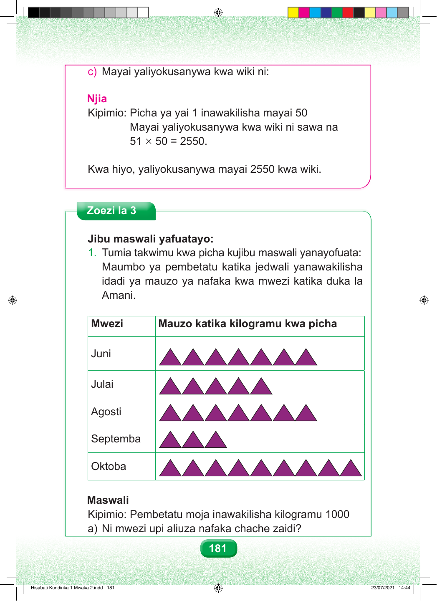

c) Mayai yaliyokusanywa kwa wiki ni: Njia Kipimio: Picha ya yai 1 inawakilisha mayai 50 Mayai yaliyokusanywa kwa wiki ni sawa na 51 × 50 = 2550. Kwa hiyo, yaliyokusanywa mayai 2550 kwa wiki. Zoezi la 3 Jibu maswali yafuatayo: 1. Tumia takwimu kwa picha kujibu maswali yanayofuata: Maumbo ya pembetatu katika jedwali yanawakilisha idadi ya mauzo ya nafaka kwa mwezi katika duka la Amani. Mwezi Mauzo katika kilogramu kwa picha Juni Julai Agosti Septemba Oktoba Maswali Kipimio: Pembetatu moja inawakilisha kilogramu 1000 a) Ni mwezi upi aliuza nafaka chache zaidi? 181 Hisabati Kundirika 1 Mwaka 2.indd 181 23/07/2021 14:44